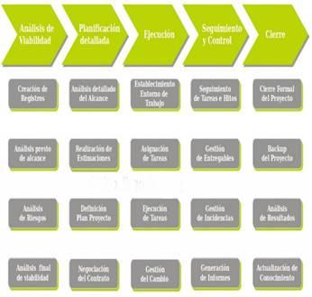

Las 5 fases en Gestión de Proyectos

1. Análisis de viabilidad del proyecto
Es la fase inicial de cualquier proyecto y su objetivo es analizar si la empresa debe o no embarcarse en
dicho proyecto, pues en ciertas ocasiones la empresa puede tener más problemas que beneficios a la hora de
realizar un proyecto.
El análisis de viabilidad debe incluir al menos las siguientes actividades:
- Creación del registro de seguimiento en la herramienta de gestión de la empresa.
- Análisis previo del alcance del proyecto.
- Análisis de los riesgos de ejecución del proyecto.
- Análisis de viabilidad de acuerdo a plazos, coste y calidad.
- Si el análisis de viabilidad es positivo, es decir, no existen motivos iníciales para no abordar el
proyecto, podemos pasar a la 2ª fase del proceso.
2. Planificación detallada del trabajo a realizar
El objetivo de esta fase es definir con el máximo detalle posible las tareas a realizar y los recursos
necesarios para llevar a buen término el proyecto. Un error de cálculo en esta fase puede ser muy dañino
para la empresa.
Las actividades clave en esta etapa son:
- Análisis del alcance del proyecto.
- Realización de estimaciones de esfuerzo, costes y recursos.
- Definición del plan de proyecto.
- Negociación del contrato.
Si finalmente el proyecto es aprobado, debe plasmarse en un contrato que recoja todos los términos del
acuerdo.
3. Ejecución del proyecto
La tercera fase de la gestión de proyectos es donde las empresas despliegan
todo su Know how y donde menos problemas suelen encontrar.
- Las actividades principales de esta etapa son:
- Establecimiento del entorno de trabajo.
- Asignación de las tareas planificadas a los recursos disponibles.
- Ejecución de las tareas planificadas.
- Ejecución de las tareas planificadas.
- Gestión de las peticiones de cambio.
De forma paralela a esta fase, es necesario realizar un seguimiento y control del proyecto que velará por el cumplimiento de la planificación y la calidad del trabajo realizado. De manera que se detecten las desviaciones antes de que se conviertan en un problema para el éxito del proyecto.
4. Seguimiento y control del trabajo
Esta etapa, junto a la de planificación detallada, es una de las más importantes para el éxito del proyecto.
En esta fase se realizan esencialmente 4 tipos de actividades:
- Seguimiento de tareas e hitos planificados.
- Gestión de entregables (incluido control de la calidad).
- Gestión de incidencias.
- Generación de informes de seguimiento.
5. Cierre del proyecto
El objetivo de esta fase es institucionalizar una etapa de control para verificar que no quedan cabos sueltos antes de dar por cerrado el proyecto. Esta fase suele ejecutarse a través de un checklist o lista de control.
Las tareas clásicas a realizar dentro de esta fase son:
- Cierre formal del proyecto por parte de todos los actores involucrados en el proyecto (stakeholders).
- Realización del backup del proyecto.
- Análisis de los resultados con respecto a las estimaciones iníciales.
- Actualización de la base de conocimiento con todo lo aprendido.
Tomado de Las 5 fases en Gestión de Proyectos, Eoi.es, 1 de abril de 2019, https://www.eoi.es/blogs/embacon/2014/04/29/las-5-fases-en-gestion-de-proyectos/